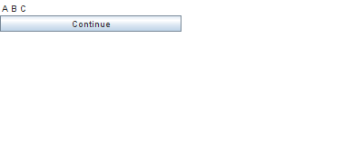
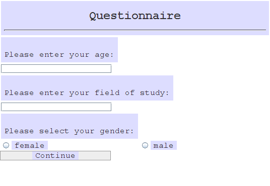

General information and frequently asked questions
Running BoXS
Which operating systems are supported?
BoXS supports all operating systems which support internet browsers with the Java addon installed. It was extensively tested on Linux (ubuntu 10.04-12.10) and Windows (XP, Vista and 7). It also works on MacOS.
Which browsers are supported?
BoXS supports all browsers which are capable of running Java applets including Chrome/Chromium, Firefox and IE.
Under Linux, which Java version should I use?
Linux users have the choice between using the OpenJDK and the Sun JDK. By default most distributions like Ubuntu have OpenJDK preinstalled. While I am a big fan of open software, in this case the Sun JDK seems to be the better choice as I have experienced several OpenJDK-specific bugs when running the BoXS.
The client programs work but say that they cannot connect to the server.
BoXS requires a working internet connection. It also requires access to the TCP ports 58000 and 58001. While this is usually not a problem and works by default, some insitutions' firewalls might interfere. In this case, please ask your IT department to grant you access to these ports.
When I run an experiment with many subjects and variables the experimenter client crashes (while the experiment continues normally).
In this case you need to increase the size Java can allocate. Follow
this tutorial. I recommend a size of up to 1 GB (-Xmx1024m).
How does the password protection work?
Passwords are realm-specific. If you enter a realm for the first time (i.e. the realm id is new and unique), you will be asked for a password. This password is then assigned to this realm. Every time you want to connect to the realm as an experimenter in the future, you will need to enter the realm password you specified.
This prevents devious subjects from seeing experiment data by accessing the BoXS as a fake experimenter.
Note: Do not forget your password, ever. If you do, you can no longer control your experiment if you get disconnected. You will still get experiment data by email, however.
Note: At the moment you do not get an error message when you mistyped the password. You will just be disconnected.
What are "autorun-experiments" and how do they work?
Autorun experiments are experiments which can take place while the experimenter does something else. Imagine, for example, a questionnaire which your subjects can fill out at some point in the near future.
In order to do an autorun experiment write/load your experiment program as usual. Then click on the autorun button (the button on the bottom right which looks like a cog). Now the experiment will start automatically as soon as you start a subject client. If you want to make a questionnaire, as in the introductory example, just copy the subject link into an email and send this mail to your subjects. Whenever a subject completes the experiment, a mail containing the experiment data will be sent to the experimenter.
- Important: If you want to do an autorun-experiment you must enter your email address at the beginning. You will not receive the experiment results otherwise.
- Note: This function only makes sense for single-player experiments.
- Note: When the server is restarted, for example for maintenance or for installing new updates, autorun experiments may get lost and need to be restarted as well. If you intend to do an autorun experiment over a longer period of time, please send me a brief mail so that we can coordinate planned downtime for maintainance accordingly.
Programming questions: general
What does the server do? What do the client-applets do?
The server keeps track of all experimenters and subjects which are connected to it. Therefore it manages the communication between all clients. It also parses and executes your programs and translates them into a format which is then displayed by the clients.
The subject-applets display the current part of the experiment as it got processed by the server. Whenever a subject enters something or makes an action, this is sent to server where it is checked for validity.
The experimenter-applet displays information about the current subject pool (in the respective realm) as well as the variable monitor. To clarify: the experimenter-applet does not execute an experiment itself. Instead it sends your program to the server where it is executed. While the experiment is running, the experimenter-applet is therefore not necessarily required.
What are "realms" and "realm names"?
The server is capable of executing a vast number of experiments at the same time. If several experiments run at the same time it is important that subjects do not get mixed up between the experiments. The "realm" is basically an arbitrary name or number identifying to which experimenter a subject belongs. Subjects are seperated in a way that allows only the experimenter from the same "realm" to access them. They are therefore protected from other people who do not know your realm id.
Since realm names are completely arbitrary you can choose any name you like. By default the BoXS suggests a randomly generated number which is usually fine. It is usually advisable to write down your realm id as it allows you to restore a session if any of your computers crashes (see below).
How do programs work? How are they executed?
Programs are parsed and executed on the server. This is done by a parser-thread which runs detached from the main server. If several subjects are involved in an experiment, a separate parser thread is created for each subject.
These threads run completely independent from each other. This means that if your program crashes for one subject, it will continue to run for your other subjects. It also means that erroneous programs created by other users cannot affect your program's execution.
The parser executes your program line by line and processes it into a simplified format which is later displayed by the clients. The parser does this until a wait-, waitForPlayers-, waitTime- or waitForExperimenter-command is encountered. At this point it sends all processed code to the clients (where it is then displayed) and halts. The parser continues, depending on the wait-command used, when the subject presses the respective button or when the given time has elapsed (waitTime).
What happens if a subject/experimenter's computer crashes or is disconnected from the network? What happens if my network breaks down?
The missing connection is detected by the server and the current experiment's execution is suspended for the respective subject. You can reconnect to the experiment by starting a new subject/experimenter session on the crashed computer. You need to enter the same realm (if applicable) and subject id for this to work. After this is done the experiment is resumed and the subject can continue at the point where her/his computer crashed.
Note that this resume ability also works if multiple subjects or even the experimenter is disconnected.
Programming questions: Design and Layout
How can I put some space between text using the display-command?
Entering spaces does not work as only a single space is displayed.
Example:


The text you display using the display-command is interpreted as HTML-code. HTML-code does, by default, not allow you to format your output using spaces. There are three ways to get the desired result:
- Use the <pre>-command. This command allows you to display text exactly as you entered it, including the spaces. A monospaced font is used for this.
- Use so-called non-breaking spaces ( ). This yields the desired result but is slightly cumbersome.
- Use tables. While tables seem the most complicated, they also give you most control over how your output will look.
Example:


How can I center (align) text using the display-command?
The easiest way is to use the 'DIV' HTML-command:
display("<div width=500 align='left'>left</div>")
display("<div width=500 align='center'>center</div>")
display("<div width=500 align='right'>right</div>")
wait()
(Where 500 ist the horiziontal screen size)
By default the input history of every player is collected and stored in the _inputHistory...-Variables. How can I disable this?
Write disableInputHistory() in the beginning of your program. No further history will be stored. If you want to reenable it, use the enableInputHistory()-Command.
I want to include non-compulsory inputs.
There is a non-compulsory version for each input command. The names for these commands are inputStringNC(...), inputNumberNC(...), choiceNC(...) and choiceRandomizeNC(...). The syntax is identical to the compulsory versions.
How should I name my variables?
You should avoid special characters and use letters and numbers only. Usually variable names start with lower case letters. However, this is not enforced by the BoXS. Variable names must not start with function names, otherwise an error is thrown. The variable "maxcontribution", for example, is not valid as it starts with "max" which is also a function. "MaxContribution" is ok, however, as BoXS is case sensitive.
Variables which are not necessary for the experimenter to know can start with "_" and will not be shown on the experimenter screen during the experiment (unless she clicks on "more").
I'm in a "matchAll(A,B)" environment and I would like that subject A will be able to set the value of "variableX" also for subject B. This way does not work:
if (...condition satisfied only for subject A...)
{
inputNumber(variableX)
inputNumber(B.variableX)
wait()
}
The BoXS does not evaluate the variable names in commands like inputNumber. In order to achieve the desired result you need to use a temporary variable like this:
if (...condition satisfied only for subject A...)
{
inputNumber(variableX)
inputNumber(variableXforB)
wait()
B.variableX=variableXforB
}
I want to sync all my subjects at a certain point in time (e.g. after a calculation).
You can use code like this:
// Calculation
A.done=A.done+1
// wait (assuming 10 subjects)
while(A.done<10)
{
waitTime(500)
}
How can I disable the Bonn Experiment System splash screen for my subjects?
You can achieve this by appending "&showstartscreen=false" to the subjects' address line.
I want to have more control over how stuff is displayed. What can I do?
You can use the not officially supported style-command. The style command takes any CSS code and will apply it to all lines that follow (with the exception of input boxes). If you want to reset it, use style(""). CSS is a widely known language which is used for every professional website. A list of CSS commands is available on many sites, for example
here.
Example:


The style-command is nice, but I only want to do small changes.
The default style which you can copy and adapt is:
body{ padding: 0px; font-size: 12px; }
h1{font-size: 130%; margin-top: 0px; margin-bottom: 3px; font-weight: normal; }
h2{font-size: 115%; margin-top: 0px; margin-bottom: 3px; font-weight: normal; }
table{background-color: #eeeeee; border:solid; border-width:1px; border-color: #000000; margin:5px; margin-left:10px;}
td,th{padding:5px;text-align: center;}
th{background-color: #dddddd; }
I have multiple rounds in my experiments. How do I prevent data from being overridden?
Use arrays to store the values you want to keep. For example:
for (i=1; i<=5; i=i+1)
{
display("Please enter your input for round "+i+":")
inputNumber(inputtemp)
wait()
input[i]=inputtemp
}
for (i=1; i<=5; i=i+1)
{
display("Your input in round "+i+" was "+input[i]+".")
}
wait()
Network setup
How does using the official server work?

If you use the official server, both the experimenter and all subjects connect to the official BoXS-server (boxs.uni-bonn.de).
My lab does not have/allow an internet connection. What can I do?
You can use an offline version of the BoXS. Note that this is usually neither necessary nor recommended. Please note that no support will be given for issues arising from running offline servers.
- That said, you can download it here (all platforms)
- On the server computer, run server.bat or server.sh (bash), depending on your operating system.
- On the clients open the index.html website using your browser. For host fill in the IP address of your server computer. When in doubt, ask your IT people / lab administrators for assistance.
- The rest should behave similar to the online server. (The option to send experiment results by emails is disabled, however.)
How do internet experiments work?

It is not required for the computers used in the experiment to be in the same network. In fact, as long as they have a connection to the internet, computers from different networks or even countries can be in the same experiment.